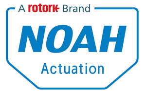

Trade Mark Journal No.2025/051 19 December 2025
UK00004298633 21 November 2025 (7,9,37)

- Class 7
- Actuators; valves and valve mechanisms; servo-valves; control and regulating valves; hydraulic valves; pressure valves; power operated valves; mechanical valves; pneumatic valves; slide, stop and shutter valves; industrial process controllers (pneumatic); dampers (parts of machines); actuators for dampers; anti-vibrating mountings for machines; gears other than for vehicles; gear assemblies, gear boxes, gear couplings, gear transmissions and gear cases, other than for land vehicles; clutches other than for land vehicles; pressure reducers; spindles not for land vehicles; bearing to shaft locking devices; locking devices for actuators and mechanical valves; mechanical regulators; pressure regulators; pneumatic regulators; vacuum regulators; flow controllers and regulators; boosters being parts of machines; volume boosters being parts of machines; pressure boosters; pneumatic air volume booster; filters; oil filters; lubricant filters; drum filters; pressure switches as parts of machines; intake manifolds for engines or motors; pressure intensifiers.
- Class 9
- Measuring, detecting, signalling and monitoring instruments, indicators and controllers; electric and electronically controlled valves; electric control and regulating valves; solenoid valves; automatically actuated valves; control valves; remote control apparatus for effecting the automatic opening and closure of valves and actuators; gauges; sensors and detectors; monitoring sensors; modulating sensors; switches, binary switches for pressure, delta pressure, temperature, humidity, gases, mists, vapour and dust; electric switch boxes; regulators (electronic); safety and releasable locking devices (electric); electric relays; electric relays, controlled using air and gas; transducers; parts of the mentioned above appliances, devices and instruments; electronic data processing equipment, in particular apparatus for the input, transmission, storage and output of data; data processing programs and software; integrated circuits and semiconductors; junction sleeves for electric cable; holders for electric coils; choking coils [impedance]; sockets; plugs, being electric connections; switches; control panels [electricity]; electromagnetic coils; connections for electric lines.
- Class 37
- Maintenance and servicing of control and fail-safe apparatus and installations, including valves, motorised valves and light mechanisms for use in pipelines and channels, particularly in the chemical, petrochemical, water and waste and power generating industries, control and fail safe apparatus and installations for industrial processes, electronic assemblies, computer hardware for monitoring and controlling industrial processes, control apparatus and installations including electrical/electronic means for controlling the operating of moveable equipment and mechanisms, including valves, motorised valves and light mechanisms for use in pipelines and channels, and of parts and fittings for the aforesaid goods.
Rotork PLC
Representative: HGF Limited